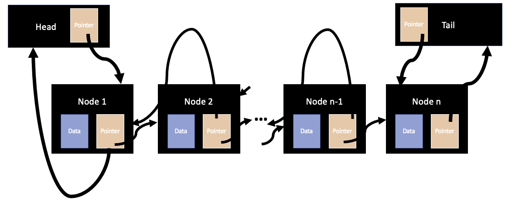

Implementing an Array Deque
A deque (pronounced as 'deck') is a double-ended queue: it allows a user to add and remove data from both ends. Another way of looking at deques is that they are concurrently stacks and queues, thus allowing them to combine the LIFO (last-in first-out) and FIFO (first-in first-out) functionalities.
Explicitly, an array deque has the capability of performing the following operations on each end:
1) Peek: You can look at the very first and last elements (entries of data) in the array-deque with a time-complexity of O(1).
2) Insert: You can insert ('push') an element to the back of the array deque with a time-complexity of O(1). To do this, the underlying algorithm just adds another element to the end of the array deque and updates the Tail to make it point to the last element in the deque. Somewhat similarly, you can insert an element to the front of the array deque with a time-complexity of O(n). To do this, the underlying algorithm just shifts all the elements in the array deque to the right by one position, and inserts the new element at the first entry.
3) Delete: You can delete ('pop') an element from the front and back of the array deque with a time complexity of O(1) by simply shifting the Head pointer by +1 or the Tail pointer by -1.
Implementing a Doubly Linked-List Deque
I then did my first layer of abstraction - converting the array-deque to a doubly linked-list deque. A doubly linked-list deque has the same functionalities as the array-deque, but is so much more efficient. Firstly, each data element is stored in a node. The node, in addition to containing the data, also contains a pointer to the node preceding it and the node following it, thus defining a natural ordering for the data contained in the structure. The two exceptions to this rule are the Head and Tail nodes which only have pointers to the start-point and end-point of the deque.
A doubly linked-list deque has the capability of performing the following operations on each end:
1)
Peek: As before, you can look at the very first and last elements (entries of data) in the doubly linked-list deque with a time-complexity of O(1).2)
Insert: You can insert ('push') an element to the back of the doubly linked-list deque with a time-complexity of O(1). To do this, the underlying algorithm starts by creating a node that contains the new element. It then uses the Tail pointer node to access the 'last data-storing node' in the deque, and changes the pointers of both these nodes to point to the new node. It finally changes the pointers of the new node to point to the previous last node and the Tail pointer node, respectively. Similarly, you can insert an element to the front of the array deque with a time-complexity of O(1). To do this, the underlying algorithm similarly starts by creating a node that contains the new element. It then uses the Head pointer node to access the 'first data-storing node' in the deque, and changes the pointers of both these nodes to point to the new node. It finally changes the pointers of the new node to point to the Head pointer node and the previous first note, respectively. Thus, the new node is inserted into the data-structure.3)
Delete: You can delete ('pop') an element from the front and back of the doubly linked-list deque with a time complexity of O(1) by simply altering the pointers such that the Head (Tail) pointer points to the node after (before) 'the node to be deleted', so that the node in after (before) of the 'node to be deleted' instead points to the Head (Tail) pointer.Implementing a Circular Array Fixed-Size Queue
I then wrote my second (and final) layer of abstraction - converting the doubly linked-list deque to the circular array fixed-size queue that I needed to implement the algorithm for the sound synthesizer. A circular array fixed-size queue uses the doubly linked-list functionality to perform the tasks of enqueuing at the Tail node and dequeuing at the Head node, while ensuring that there are atmost a fixed number of elements in the queue. The static size of the queue is not a constraint of the queue; rather, it is a feature: restricting the size of the queue can be done by storing its size and using a conditional statement to ensure that the capacity is not exceeded. Whenever an element in inserted to (deleted from) the queue, we move the tail index (head index) forward, while wrapping around the queue; so, the first (last) positional node is not necessarily the first (last) node in terms of the ordering of the data in the queue.A circular array fixed-size queue has the capability of performing all of the operations described above; but here, I will only describe the functionalities that are necessary for the algorithm:
1)
Peek: You can look at the very first element in the queue with a time-complexity of O(1).2)
Insert: You can insert ('push') an element to the back of the queue with a time-complexity of O(1). To do this, the underlying algorithm starts by creating a node that contains the new element. It then uses the Tail pointer node to access the last data-storing node in the deque, and changes the pointers of both these nodes to point to the new node. It finally changes the pointers of the new node to point to the previous last node and the Tail pointer node, respectively. Thus, the new node is inserted into the data-structure.3)
Delete: Finally, you can delete ('pop') an element from the front of the doubly linked-list deque with a time complexity of O(1) by altering the pointers such that the Head pointer points to the node after the 'node to be deleted', so that the node in front of 'the node to be deleted' instead points to the Head pointer.